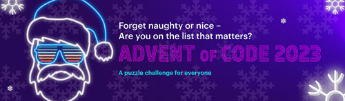

Advent of Code - Rankings (2023)

It's here!
- Follow the instructions on the Portal Page (Commercial login).
- Join the Advent of Code Teams channel (Defense login) to chat with other puzzle solvers.
- The first puzzle unlocks at midnight Eastern on Dec. 1. This is the night of Nov. 30, not the night of Dec. 1!
- Advent of Code is still fun if you don't want to be up at midnight. Do the puzzles later to flex your problem-solving skills or learn a new language!
Scoring FAQ
- Your daily time to complete each two-part puzzle (worth 2 stars) is measured as "time since the puzzle unlocked at midnight Eastern".
- The winner in the company competition will have the most stars by 11:59 PM on December 31.
- Last year, 15 people earned all 50 stars. Ties are broken by the lowest median daily time (in other words, your 13th fastest daily time out of 25 if you finish every puzzle).
- Use this page to track everyone's progress since the official private leaderboard uses a different scoring system.
This rankings page is a volunteer project that is not endorsed or supported by our company.